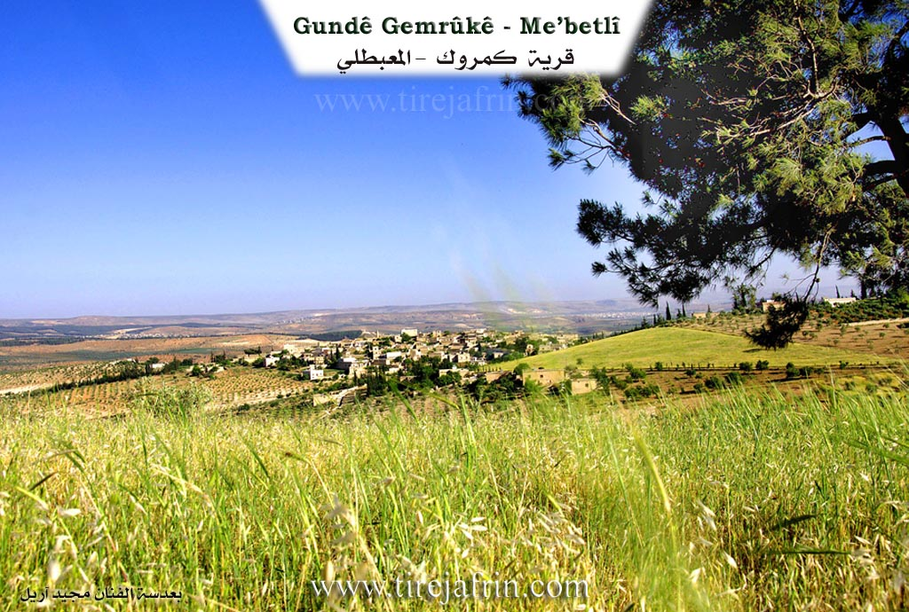
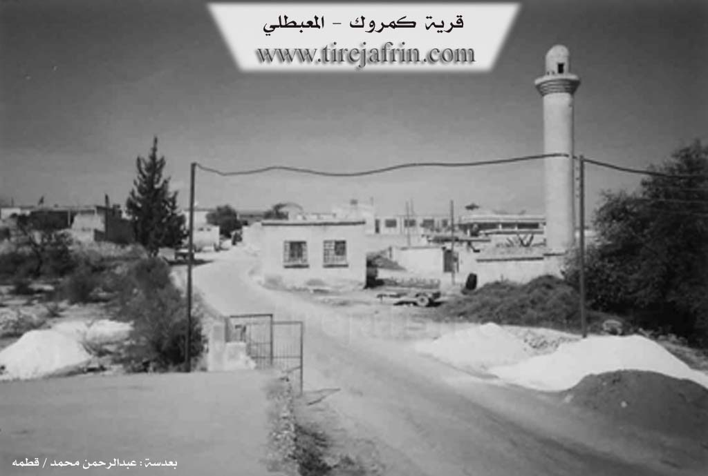

General Information
Nahiya (Subdistrict)
Mabeta
Also Known As
Al-Jamrakiya, Gemrikê, Gemrukê, Gemrûgê, Gemrûk, Gemrûkê, Kamrok, الجمركية, كمروك, گمروك
Tribes
Maqostina, Şîkakan
Families, Clans, etc.
Dedişka, Ebû Xelîl, Elkêla, Elmişka, Hafizê Dmol, Hesendêro, Hesensêydî, Heymûnî, Kera, Mala Cûmî, Mala Dayê, Mala Dwana, Mala Ehmo, Mala Ehû, Mala Elî Sûd, Mala Emdînê, Mala Hesenî Şêxû, Mala Hesfeqîre, Mala Hesko, Mala Mehmedî Xaçkê, Mala Mehûyê Begjî, Mala Mela Yûsiv, Mala Meştî Salehê, Mala Moşûka, Mala Nasif, Mala Qamê, Mala Qurt'ele, Mala Rindik, Mala Xaçkê, Mala Çîçek, Mala Îso, Mala Şukrî Evdê, Mala Şêx Elî, Mala Şêx Hemadê, Malêd Ereba, Miheme Molo, Mêrdox, Qurbe, Xorato, Yehmo, Çamraka, Çemroka

Photos


Basic Information about Gemrûkê
Source: Ax û Welat
Etymology: Derived from Çem Rûke (River of Rûke) or from the name of the Çemroka or Çamraka family
Springs: Ke'niya Mêwkê
Hills: Girê Încirli
Shrines: Ziyaret, Ziyareta Kehanzerkê, Sazman, Zerke
Ruins: Qonaxa Mêhran
Trees: Dara palîtê
Wells: Bîra Qûçkê, Bîra Încirliyê
Other Landmarks: Aşê Hesen Seydî, Sûlava Gemrûkê, Çemê Efrînê, Geliyê Ke'niyê, Geliyê Qumişlê, Geliyê Besê, Korta Reza, Geliya Zerkê, Bendava Meydankê
Source: Afrin 366
Old Names: Çama
Springs: Şelalat Gemrîkê
Ruins: Aşê Hesensêydî, Keferrûm Xwîntê, Elqê Xwîntê, Tehûnê
Other Landmarks: Zinarê Çama, Serê Firt Xoloq Xwîntê, Seddê Meydankê
Summaries
I. Summary from TirejAfrin Site (English) of Gemrûkê
Villages of Mabetli District (المعبطلي) / Mabeta
1 - PhD/Villages/Gemrûkê (كمروك) - 1 - PhD/Villages/Gemrûkê
===
According to the book جبل الكرد|Mountain of the Kurds (Afrin) Geographic Study by Dr. Mohammed Abdo Ali:
Gemrûk (گمروك), Al-Jamrakiya (الجمركية) /2791N - 640H - 12km - 390m/:
- There was a main road passing through the current Gemrûk village (قرية گمروك), connecting the villages of Balbal (بلبل) and its surroundings with Jouma Plain (سهل جومه). Ottoman customs used to stop on that road near the village, so it was named Gumrik "گمرك وگمروك" (گمرك وگمروك), then it was Arabized and became Al-Jamrakiya (الجمركية). As for the old village, it was in a location called Qûçkê (قوچكه) beside Afrin River (نهر عفرين). Its inhabitants moved to their current elevated location about 150 years ago.
- It is a large village located on a wide plateau, 2km away from Afrin River (نهر عفرين). There are beautiful waterfalls on Afrin River near its southeastern side, named after it. The village location is beautifully scenic and attracts vacationers.
According to the book: Afrin... Her River and Green Hills by writer Abdulrahman Mohammed from Qitma village (قطمه):
Kamrok (كمروك): A village in Kurdish Mountain (جبل الكرد), belonging to Mabetli District (ناحية المعبطلي), Afrin (منطقة عفرين), Aleppo Governorate (محافظة حلب).
It is a large village located in the central part of the mentioned mountain, on a mountain elevation and limestone plateau crossed by several streams sloping toward Afrin River valley (وادي نهر عفرين), 15km away from Mabetli town (بلدة معبطلي) toward the northeast. Its soil is clay.
It is bordered to the north by a slope and several streams planted with olive trees and Shorba Oghli village (قرية شوربه أوغلي) and Semalak (سيمالك), to the south by a slope planted with olive trees and Sili Valley (وادي سيلي) and Arab Sheikho village (قرية عرب شيخو) nearby at 1km distance, to the west by a slope and Sili Valley (وادي سيلي) and mountain elevations planted with olive trees and Sheikh Hitko village (qرية شيخ هتكو), and to the east by a slope and Sili Valley (وادي سيلي) and the Afrin River course (مجرى وادي نهر عفرين) and Medanki village (قرية ميدانكي) and 17 Nisan Dam (سد 17نيسان) and Haloubi Kabir village (قرية حلوبي كبير).
The number of houses is about 200, and its age is about 500 years. It is one of the old villages in the region. Its old houses are stone and clay with flat wooden roofs, and the modern concrete ones spread west, north and south. It has electricity network and primary and preparatory school and an old mosque in the village center. It has a modern olive press and connects to the district center by a paved road passing through its center to several neighboring villages.
The village drinks from a water network from a well located in the village and from cisterns that collect rainwater in winter. The inhabitants work in rain-fed agriculture on an area of 300 hectares with grains, olives, vineyards and legumes, and they cultivate irrigated crops from artesian wells or by pumping from Afrin River (نهر عفرين) with summer vegetables, cotton and sugar beet, in addition to raising sheep and goats.
Among its most important families is the Ibrahim Khalil family (عائلة إبراهيم خليل), the first to inhabit the village, and the Alkilo - Karo family (عائلة علكيلو – كارو). It is mentioned that Dr. Yusuf Hassan (الدكتور يوسف حسن), holder of a doctorate in media psychology from France and now teaching at Qatar University (جامعة قطر), is from the sons of this village.
Village mayor: Mohammed Minan Minan (محمد منان منان)
Prepared and implemented by: Site manager of Afrin Heritage: Abdulrahman Haji Othman (عبدالرحمن حاجي عثمان)
20/12/2013
II. Summary of Gemrûkê from Ax û Welat
Source: https://www.youtube.com/watch?v=jF1HDrGmbmo
The village of Gemrûkê, located in the Mabeta district of the Efrîn region (also known as Çiyayê Kurmênc), is a historically significant settlement renowned for its water sources and ancient infrastructure. The name of the village is debated among residents; some attribute it to Çem Rûke (meaning "River of Rûke" or "Shaking River"), while others believe it stems from the Çemroka or Çamraka family, who were among the first settlers. This family belonged to the Şîkakan tribe. The village has a rich multicultural past, having been home to Kurds, Arabs, Armenians, Êzîdî, and Jews. While the Armenians and Jews (specifically the Mêrdox and Heymûnî families) have since left, their historical presence is marked by sites like the ruins of a priest's mansion, Qonaxa Mêhran. The Hesfeqîre family is noted as being originally Êzîdî but converted to Islam over time.
The history of Gemrûkê is deeply intertwined with the Aşê Hesen Seydî, a watermill located on the Çemê Efrînê. Residents estimate the mill and the associated dam structure (Sûlava Gemrûkê) to be approximately 700 to 750 years old, constructed with lime rather than cement. The mill was a vital economic hub for the entire region, drawing people from as far as Enqere and Aleppo, as well as local villages like Şiyê, Reco, and Meydanleqê. It was owned and managed by various local figures throughout history, including the Mala Mela Yûsiv, Mala Şêx Elî, and an Armenian named Bêkarê Xelîl. The mill operated until the late 20th century (cited as either 1979 or 1997) when the flow of water was disrupted by the construction of the Bendava Meydankê and actions by the Syrian regime.
The village is also a center for traditional healing practices centered around the Geliya Zerkê and the Ziyaret shrine. Locals believe this site cures jaundice (known locally as "nexweşiya Zerkê"). The ritual typically takes place on Wednesday mornings before sunrise. Families bring afflicted children to wash them with water from the site, feed them a small amount of soil called tiberk, and leave pieces of the patient's clothing on the Dara palîtê (oak tree) as a symbol of leaving the illness behind. Offerings of eggs, bread, and bulgur are also common.
Culturally, Gemrûkê has produced notable figures such as Xoce Emdînê, a religious scholar who translated Islamic texts and the Mawlid into Kurmanji, and the singer Henan, who recounts receiving his musical gift in a dream. The village social structure was historically maintained by elders (rûspî) such as Menanê Têwed, Mehmedê Eîşan, and Evdê Qurt'ele who settled disputes. Today, despite displacement caused by the conflict in Syria, the village remains a popular destination for tourism due to the restored waterfalls and natural beauty, with approximately 500 households residing there.
II. Summary of Gemrûkê from Afrin 366
Source: https://www.youtube.com/watch?v=JSFg1yq8HlM
The village of Gemrîk, located in the Afrin region, is a historically significant settlement with a deep connection to its surrounding geography and water sources. Local residents estimate the history of the village to be between two thousand and three thousand years old. The inhabitants identify closely with the name Çama, stating that their origins trace back to this lineage or location, and a prominent rock formation overlooking the area is named Zinarê Çama. The village currently contains approximately sixty households.
The social structure of Gemrîk is defined by the Maqostina tribe. Several prominent families and lineages are mentioned by the residents, including Mala Dayê (also referred to as Malê Dayînê), Mala Dwana, and the lineage of Hesendêro. The host visits the home of Ebû Xelîl, and other individuals such as Xorato, Miheme Molo, and Hafizê Dmol are identified as residents or contributors to the documentation of the village.
Gemrîk is renowned for the Şelalat Gemrîkê, a waterfall and spring system that was once a vibrant recreational hub with restaurants and mills. However, the documentary highlights a severe water crisis; the waterfall has largely dried up, a situation the locals attribute partly to the Seddê Meydankê holding back water and partly to general drought. The dry riverbed has revealed ancient features, such as the ruins of Tehûnê (old mills) and specifically Aşê Hesensêydî, a historic mill owned by the Hesensêydî or Hesendêro family. This mill is now described as ruined and flattened.
The landscape around Gemrîk is dotted with specific micro toponyms and historic sites preserved in the collective memory of the elders. These include Keferrûm Xwîntê, Elqê Xwîntê, and Serê Firt Xoloq Xwîntê. The terrain also features underground caves, referred to simply as "kûk," which are described as being beneath the soil. Due to the scarcity of surface water, residents are forced to drill deep wells, with the cost of drilling reaching high prices per meter. Despite the heat and the drying of their famous waterfall, the community maintains a strong connection to their land and its ancient history.
II. Ax û Walat Book 2
35
GEMRÛK
24.7.2017
[Image of the village of Gemrûk]
Gemrûk and Meydankê are the most beautiful villages on the Efrîn river. Therefore, they have become places of enjoyment and excursions for the people of the region.
The village of Gemrukê is affiliated with the Mabeta district of the Efrîn canton, located 14 km east of the town of Mabeta and 22 km north of the city of Efrîn.
The name of the village comes from the phrase ((ÇEM RÛK)) or (by the river), because the village is near the Efrîn river.
Another view says that it comes from the name of a family from the village named (Çemraka), and this family is still in the village.
36
The Çemraka family was the first family to settle in this area, and the village was named after them; they are from the Şikaka tribe. Later, the Elkêla family came.
The village of Gemrûk is composed of a multicultural mosaic, of Kurds, Arabs, Armenians, Yazidis, and Jews who had previously populated the village, but now there are no Armenians left. They used to have a school in the village, and their priest's residence, named ((Mihran)), was in the village.
Two Jewish individuals named ((Mirdoq and Heyûmî)) lived in the village for many years and were engaged in trade. 70 years ago, they moved to the city of Aleppo.
There is a Yazidi family in the village named ((Hesfeqîr)), but they have now become Muslims.
There are 24 families in the village:
The families of Çermoka, Elkêla, Kera, Elmişka who came from the village of Miskê, Deûşka, Qurt Elî, Hesenê Şêxo, Şêx Elî who are originally from Kobanê, Êhmo, Nasîf who came from the village of Me’mila, Hesko who came from the village of Xelîlaka, Umdînê, Bêgacî, Cûmî, Rindik, and two Arab families (Hec Mehmûd and Mihemed Elî) from the Imêrat tribe, Mihemedê Xeckê from the village of Elemdara, the Umero family from Mûş who came from the village of Kulisîk after the Şêx Seîd rebellion, the family of Şukrî Evdê who came from the village of Çeqmaqê Mezin, Mecîdê Sêlih from North Kurdistan, Îso, Hesenê Resûl, Şêx Hemadê, Laço, and the Gurdo family who came from the village of Recê.
37
There are around 300 houses in the village and more than 3000 people live there, but many people have moved abroad after the Syrian crisis.
To the east of the village are the town of Meydankê, the Meydankê dam, the Kaniyê valley, and the Zerkê shrine.
To the south are the village of Ereb Şêxo and the Efrîn river, where the Gemrûkê Waterfalls flow, which has become the most interesting place for trips and excursions in the spring and summer, with people from near and far visiting it.
[Image of people at the Gemrûkê Waterfalls]
To the west of the village are the village of Şêxûtka and Korta Reza, and to the north, the villages of Sêmalka and Şorbe, and the Incirlik hill where there is an ancient water well.
There are two shrines to the west and north of the village, Sazman and Zerkê.
The people of the village make their living from agriculture, from olive groves, due to the abundance of water sources from the river and wells,
38
vineyards, and vegetable gardens, and they also plant lentils, chickpeas, barley, and wheat.
Some families also raise livestock such as sheep, goats, and cattle. There are 2 sewing workshops, 2 olive presses, 10 shops in the village, and a restaurant by the waterfalls, where many young men from the village work.
Nearly 50 people work in the institutions and bodies of the Democratic Autonomous Administration.
The Mill of Hesenê Seydê is located to the south of the village; it was once a famous water-powered mill, and people from many villages would come to grind their flour. It was in operation until 1997 and stopped after the construction of the Meydankê dam.
The Gemrûkê Waterfalls were destroyed by the Regime, but after the Rojava Revolution, they were restored.
There are 6 martyrs from the village:
Martyr Welat, Hemîd, Rênas, Hemze, Doxan, and Martyr Şêristan.
The village's commune is named after Martyr Hemze, the primary school is named after Martyr Hemîd, and the middle school is named after Martyr Rênas.
There is a Culture and Arts Academy Center and a mosque in the village.
Xocê Umdînê was an Islamic cleric, and he would have the mawlid recited in the Kurdish language. He wrote several books on the Islamic religion and passed away in 1963.
39
Mihemed Menan and Şêx Hesen were known as elders of the village; they provided many services to the people of the village.
It is worth mentioning that the village's water well provides drinking water to 5 villages: Sêmalka, Şêxûtka, Emara, Ereb Şêx, and the village of Gemrûkê.
Transcriptions and Subtitles
| Source | Video | Subtitles | Transcript |
|---|---|---|---|
| Ax û Welat 1 | Watch Video | Download SRT | View Transcript |
| Afrin 366 1 | Watch Video | Download SRT | View Transcript |
Foundation/Origin Information of Gemrûkê
The old village was in a location called Qûçkê beside the Afrin River. Its inhabitants moved to the current location about 150 years ago. The first to inhabit the village was the Ibrahim Khalil family.
Source: TirejAfrin Site
Possible Village Name Meaning of Gemrûkê
Ottoman customs used to stop on a main road near the village, so it was named Gemrûk (customs).
Source: TirejAfrin Site
V. Links
- Tirejafrin:
http://www.tirejafrin.com/site/kura%20afrin%20%20%20mebetli%20-%20gemruke.htm - Ax û Welat:
https://www.youtube.com/watch?v=YlpzDw1XBFo - Videos:
https://www.youtube.com/watch?v=IZjvyswmOTY
https://www.youtube.com/watch?v=MBHkfsTl7Xk
https://www.youtube.com/watch?v=2Mgc9A3C164
https://www.youtube.com/watch?v=2Mgc9A3C164
https://www.youtube.com/watch?v=jF1HDrGmbmo - Afrin 366:
https://www.youtube.com/watch?v=JSFg1yq8HlM